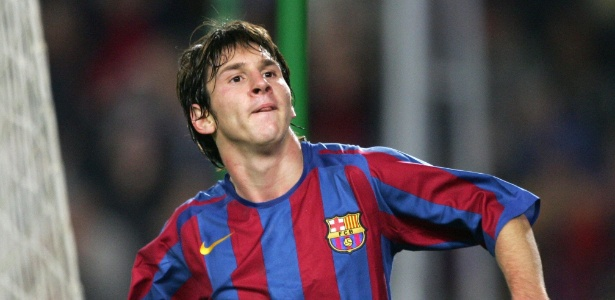
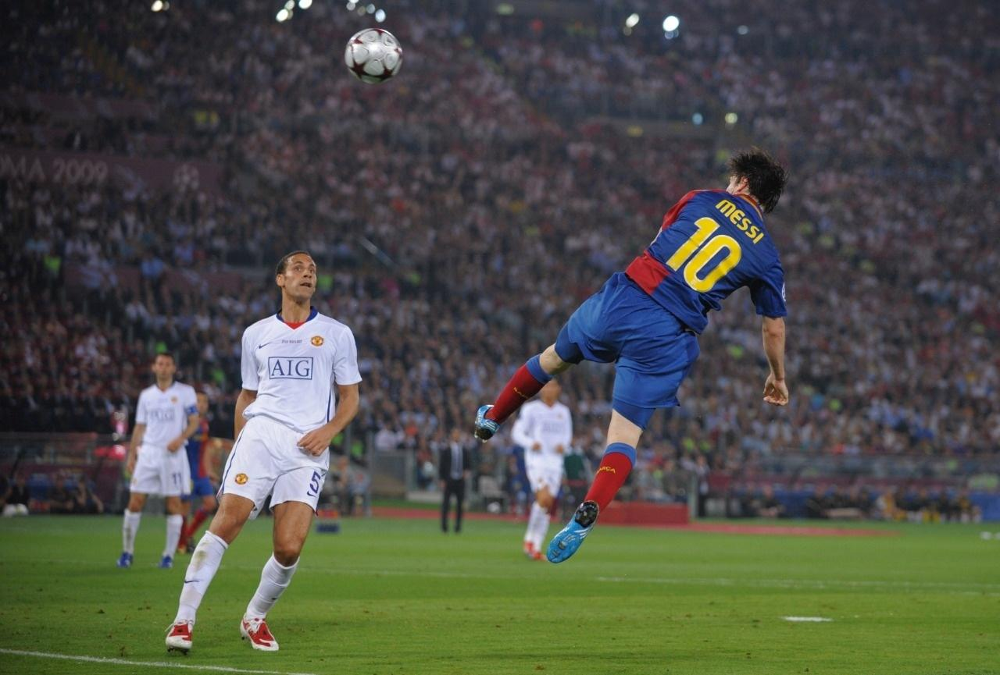
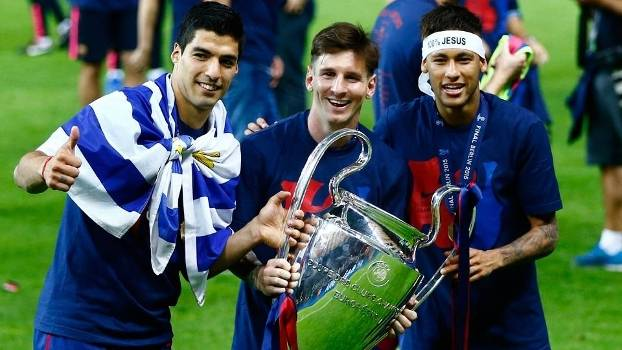

Lionel Andrés Messi Cuccittini é um futebolista argentino que atua como atacante. Atualmente joga pelo Paris Saint-Germain e pela Seleção Argentina, onde, atuando como capitão, venceu a Copa do Mundo do Catar de 2022.
Nascido e criado em Rosário, na Argentina, Messi foi diagnosticado com uma deficiência do hormônio do crescimento quando criança, então com 13 anos, se mudou para a Espanha para ingressar no Barcelona, que concordou em pagar por seu tratamento médico. Pelo Barcelona, Messi fez sua estreia aos 17 anos em outubro de 2004. Estabeleceu-se como jogador integral do clube nos próximos três anos.
Lionel Messi é considerado um dos maiores jogadores de futebol da história e suas performances na UEFA Champions League ao longo dos anos têm sido impressionantes. Messi é o vice artilheiro histórico da competição com 120 gols em 149 jogos.
Messi teve sua primeira participação na Champions League na temporada 2004-2005, quando o Barcelona foi eliminado nas oitavas de final pelo Chelsea. Na temporada seguinte, Messi marcou seu primeiro gol na competição contra o Panathinaikos. Ele terminou a temporada com três gols em nove jogos, mas o Barcelona foi eliminado nas oitavas de final novamente.
A temporada 2006-2007 foi um marco para Messi, quando ele marcou seis gols em 10 jogos e ajudou o Barcelona a conquistar a Champions League. Messi marcou um gol crucial na final contra o Manchester United e foi eleito o Homem do Jogo.
Nas temporadas seguintes, Messi continuou a ser uma figura importante na campanha do Barcelona na Champions League, marcando gols cruciais e ajudando a equipe a chegar às finais. O Barcelona conquistou o título novamente em 2009 e 2011, com Messi sendo fundamental em ambas as campanhas.
Na temporada 2014-2015, Messi marcou 10 gols em 13 jogos e ajudou o Barcelona a conquistar a Champions League pela quarta vez em sua carreira. Ele também foi o artilheiro da competição naquela temporada. E juntamente com Neymar Jr e Luis Suárez formou um dos trios que até hoje é considerado o melhor trio de ataque da história do futebol.
Desde então, Messi continuou a brilhar na Champions League, marcando gols importantes e ajudando o Barcelona a chegar às quartas de final ou além em cada temporada. Embora o Barcelona não tenha conquistado o título nos últimos anos, Messi permanece como um dos jogadores mais perigosos e talentosos da competição.
Lionel Messi escreveu o seu nome na história do futebol mundial com o título conquistado pela Argentina, na vitória diante da França, na Copa do Mundo 2022. Aos 35 anos, o camisa 10 retira-se da Copa do Mundo de 2022 com o título tão sonhado, que ele havia visto escapar em 2006, 2010, 2014 (com um vice) e 2018.
Ao longo da competição no Catar, onde teve o seu melhor desempenho em Copas, Messi foi quebrando marcas: de jogos, de gols, de assistências e outras que ninguém sabia que existiam. Para ficar por dentro de todas as marcas alcançadas por ele na copa clique aqui